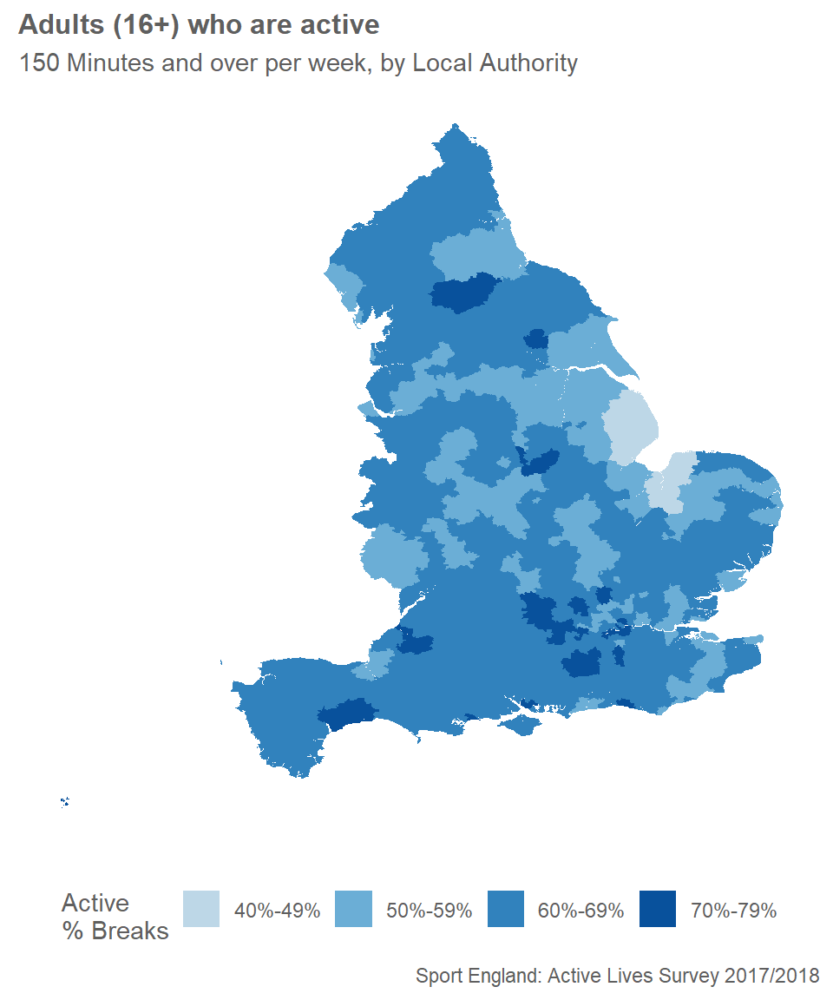

Making Maps
This is a brief overview on how to create custom choropleth maps in R using Shapefiles. Some basic knowledge of R is assumed.
library(ggplot2) # Our favourite grammar of graphics to create the map
library(rgdal) # turning a shapefile into a dataframe
library(plyr) # for "join" function- The data you want to map
- A Shapefile (which is an amalgamation of several files containing geospatial data). See here for more information about Shapefiles. The aim of the game is to convert the Shapefile into a dataframe, and join with the data you wish to map. In order to do this, you will need to have a common variable (e.g. a Local Authority code)
We will use the Shapefile from data.gov.uk. This contains data beyond our interest (i.e. beyond England) so we will need to do a bit of data cleaning once we have created our joined dataframe.
We now read in our csv file of Active Lives data.
df <- read.csv("input/Active_Lives_Data.csv", header = TRUE) # read in the file and keep the headers
df[1,c(1:6)] # cheeky peek at the first row and first few columns of data to check ## X lad17cd lad17nm Age.16..Respondents Age.16..Inactive
## 1 1 E06000001 Hartlepool 477 0.343
## Age.16..Fairly.Active
## 1 0.104Use the rgdal package to read in the Shapefile. After it has been read in, joined with the Active Lives data, and converted to a dataframe, we can remove extraneous data (anything not in England) by using grep (regular expression) function on the Local Authority code column (aka “lad17cd”).
setwd("input/Shapefile")
map <- readOGR(dsn = ".", layer = "Local_Authority_Districts_December_2017_Super_Generalised_Clipped_Boundaries_in_Great_Britain", verbose = FALSE)
#summary(map) # see if projections used if necessary
# head(map@data) # check read in
map@data$id <- rownames(map@data)
map@data <- join(map@data, df, by="lad17cd") #join
map.df <- fortify(map) #to dataframe
map.df <- join(map.df,map@data, by="id") #join
map.df <- map.df[grep("E", map.df$lad17cd),] # England only
map.df <- map.df[, !duplicated(colnames(map.df))] # remove dupe cols
We can use geom_polygon to create our map, and strip out axes, gridlines etc. using theme.
se_colour<- c("#bdd7e7", "#6baed6", "#3182bd", "#08519c") # custom colours to use in the chart
ggplot() +
geom_polygon(data = map.df, aes(x = long, y = lat, group = group, fill = Total.Active.breaks))+
theme_minimal() +
theme(axis.title.x = element_blank(),axis.title.y = element_blank(),
text = element_text(family = "Corbel", color = "#5F5F5F"),
plot.title=element_text(size=14,family = "Corbel", face="bold", hjust = 0.5),
panel.grid = element_blank(), # remove all axes and gridlines
axis.text = element_blank(),
axis.ticks.x = element_blank(),
legend.position = "bottom") +
labs(title = "Adults (16+) who are active (150 Minutes and over per week)\n by Local Authority", caption = "Sport England: Active Lives Survey 2017/2018") +
scale_fill_manual(values = se_colour, name = "Active\n% Breaks")